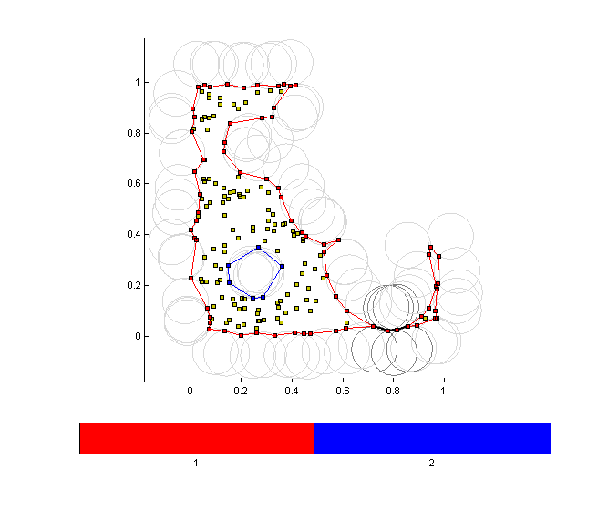
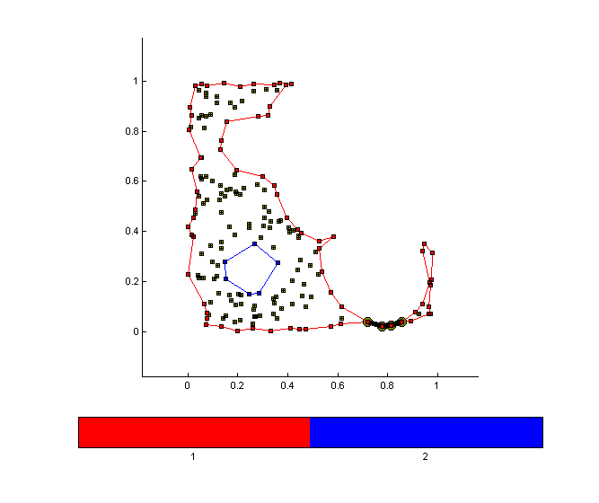
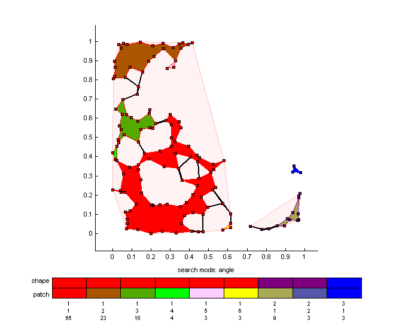
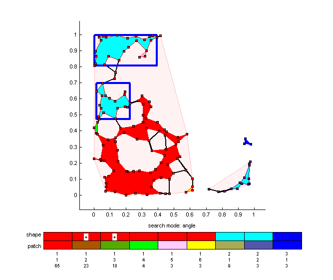
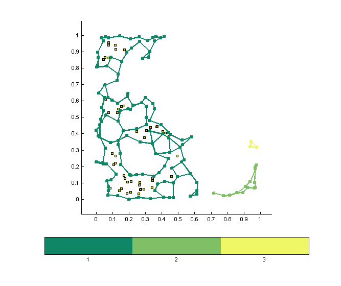
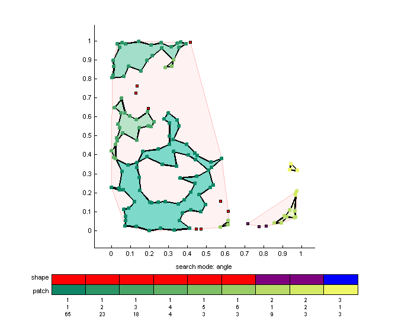
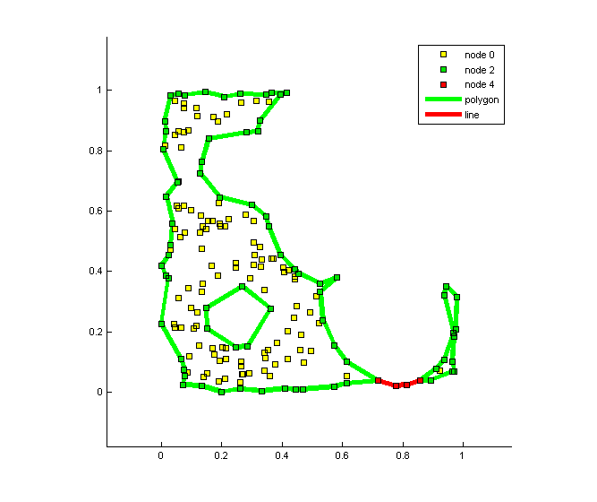

Contents
% ASDEMO a demo script for ASHAPE / ASLIB % % SYNTAX % ASDEMO % EXAMPLE % asdemo % NOTE % ASDEMO sets your random generator!
% created: % us 17-Jan-2005 % modified: % us 13-Apr-2010 15:31:23
create test data
% fill a square with random data % ... and put some holes into it % note % - sets and uses Mersenne Twister (Nishimura/Matsumoto) algorithm % rand('twister',10); % - sets and uses Marsaglia's algorithm rand('state',10); %#ok n=400; x=rand(n,1); y=rand(n,1); cp=[ .25 .25 .1 .75 .25 .2 .25 .75 .1 .75 .75 .4 .5 .5 .1 ]; a=pi/180*(0:360); for j=1:size(cp,1) z=cp(j,1)+1i*cp(j,2)+cp(j,3)*exp(1i*a); z=inpolygon(x,y,real(z),imag(z)); x=x(~z); y=y(~z); end
create ALPHA SHAPES (1)
% create ALPHA SHAPES using circles with radius r % show all valid ALPHA CIRCLES using option [-bc] % for available options see: ALSIB -o % note % - ALPHA LINE ALPHA CIRCLES are darker r=.09; disp('alpha shaping in progress...'); p=ashape(x,y,r,'-bc'); disp('alpha shaping done'); disp(sprintf('runtime%10.3fs',p.runtime)); % ... keep for later use po=p;
alpha shaping in progress... alpha shaping done runtime 0.171s
- modify the plot using ASLIB subroutines
% create a new figure and turn ALPHA CIRCLES off % ... using a function handle to ASLIB's graphics engine % for available subroutines see: ASLIB -s % ... plot all elements p=p.f.gall(p); % ... remove ALPHA CIRCLES p=p.f.gcir(p,1); % ... change DATA MARKERS to (+); set([p.h.AS_dat{:}],'marker','+'); % mark ALPHA LINE nodes and edges % ... using index fields returned in P % for an explanation of P fields see: ASLIB -f ix=p.dmod==4; line(p.x(ix),p.y(ix),... 'marker','o',... 'markersize',8,... 'markerfacecolor',[.5 .5 0],... 'linestyle','none',... 'color',[0 0 0]); ix=p.amod==2; line(p.x(p.seg(ix,:)).',p.y(p.seg(ix,:)).',... 'linewidth',4,... 'color',[0 0 0]);
create ALPHA SHAPES (2)
% use a different ALPHA CIRCLE radius, do not plot at runtime [-g] o=ashape(p.x,p.y,r/2,'-g'); % ... create an alias for later plotting f=o.f.gpat;
- show ALPHA PATCHES
% note % - CONVEX HULLS are shown in light red % - ALPHA LINES are shown in bold black % - ALPHA SHAPES are grouped by the color of their ALPHA NODES (squares) % - ALPHA PATCHES are marked by the color of their area figure; f(o);
- mark ALPHA SHAPES / ALPHA PATCHES
% individual ALPHA SHAPES/ALPHA PATCHES are marked in cyan % by selecting % - ALPHA PATCHES | ALPHA HULLS on the graph % - SHAPE | PATCH elements on the colorbar % by applying % - macro P.f.mark() % selections are toggled % % syntax % P = P.f.mark(P,ix1,...,ixN); % argument(s) % ixX: ALPHA SHAPE % ixX: [ALPHA SHAPE, ALPHA PATCH] figure; o=f(o); % mark % - ALPHA SHAPE #2 % - ALPHA SHAPE #1 PATCH #2 / #3 o.f.mark(o,2,[1,3],[1,2]);
for programmers
% A denotes ALPHA
- extract ALPHA SHAPES
% A SHAPES are built from A EDGES and A LINES % % - their A EDGES are NOT contiguous % - their A EDGES are indexed by % % P.ashape: contains ALL A EDGES including those with % bifurcating A NODES % % P.sshape: contains only A EDGES with singular A NODES % on both sides % % : each field is a CELL of % of {P.nshape x 2} indices into P.x/P.y % with each pair [1 x 2] forming a valid A EDGE figure; p=ashape(x,y,r/2,'-g'); p.f.gdat(p); % <- plot data p.f.gcon(p); % <- plot A NODES ns=p.nshape; % <- # A SHAPES as=p.ashape; % <- A EDGE indices: full data set % - create a color map cmap=summer(256); cmix=round(linspace(16,240,ns)); cmap=cmap(cmix,:); colormap(cmap); % - plot individual A EDGES for i=1:ns xs=p.x(as{i}); ys=p.y(as{i}); line(xs.',ys.',10*ones(size(xs.')),... 'marker','s',... 'markersize',4,... 'markeredgecolor',cmap(i,:),... 'markerfacecolor',cmap(i,:),... 'linewidth',2,... 'color',cmap(i,:)); end
- extract ALPHA PATCHES
% A PATCHES are part of A SHAPES % % - their A NODES are contiguous % - their A NODES are indexed by % % P.apatch: M x N CELL array with format % % A SHAPE 1/A PATCH 1 ... A SHAPE 1/A PATCH N % ... % A SHAPE M/A PATCH 1 ... A SHAPE M/A PATCH N % % : each CELL is a {M x 1} list of indices % into P.x/P.y, which are valid A NODES % % P.mpatch: ARRAY with same format showing type of A PATCH % 1 = A PATCH is a subset of an A SHAPE % 2 = A PATCH is the A SHAPE figure; p=p.f.gpat(p); % <- plot A SHAPES/A PATCHES p=p.f.gseg(p,1); % <- remove A EDGES np=p.npatch; % <- # A PATCHES ns=p.spatch(1); % <- # A SHAPES na=p.spatch(2); % <- # A PATCHES/A SHAPE [max] % - show distribution of A PATCHES % note: % - A SHAPE 2 has only one A PATCH pc=arrayfun(@(x) sprintf('P #%-1d',x),1:size(p.mpatch,2),'uni',false); pr=arrayfun(@(x) sprintf('S #%-1d',x),1:size(p.mpatch,1),'uni',false); pd=[ { ''},pc [pr.',num2cell(p.mpatch)] ]; disp(pd); % - create a color map cmap=summer(256); cmix=round(linspace(16,240,np)); cmap=cmap(cmix,:); colormap(cmap); cmix=0; % - plot individual A PATCHES for j=1:ns for i=1:na if p.mpatch(j,i) cmix=cmix+1; xs=p.x(p.apatch{j,i}); ys=p.y(p.apatch{j,i}); disp(sprintf('marking A shape %3d / A patch %3d: %5d A edges',j,i,numel(xs)-1)); line(xs,ys,20*ones(size(xs)),... 'marker','s',... 'markersize',4,... 'markeredgecolor',cmap(cmix,:),... 'markerfacecolor',cmap(cmix,:),... 'linewidth',2,... 'color',[0,0,0]); end end end set(p.h.AS_patch,{'facecolor'},num2cell(brighten(cmap,.75),2));
'' 'P #1' 'P #2' 'P #3' 'P #4' 'P #5' 'P #6'
'S #1' [ 1] [ 1] [ 1] [ 1] [ 1] [ 1]
'S #2' [ 1] [ 1] [ 0] [ 0] [ 0] [ 0]
'S #3' [ 2] [ 0] [ 0] [ 0] [ 0] [ 0]
marking A shape 1 / A patch 1: 65 A edges
marking A shape 1 / A patch 2: 23 A edges
marking A shape 1 / A patch 3: 18 A edges
marking A shape 1 / A patch 4: 4 A edges
marking A shape 1 / A patch 5: 3 A edges
marking A shape 1 / A patch 6: 3 A edges
marking A shape 2 / A patch 1: 9 A edges
marking A shape 2 / A patch 2: 3 A edges
marking A shape 3 / A patch 1: 3 A edges
 - show ALPHA element properties
% use macro P.f.gmod() to display the node/line properties of % % - data points P.dmod % - A EDGES P.amod % syntax % % P = P.f.gmod(P); figure; p=p.f.gmod(po); set(p.h.AS_legend,'location','northeast');